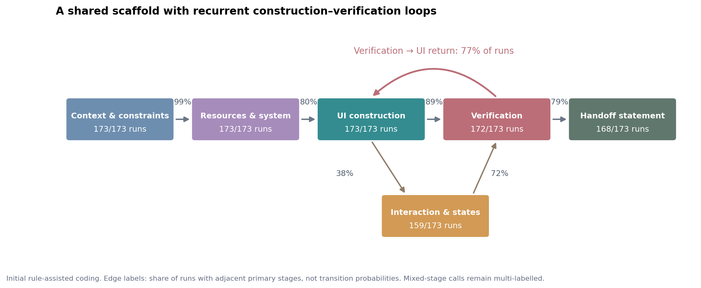
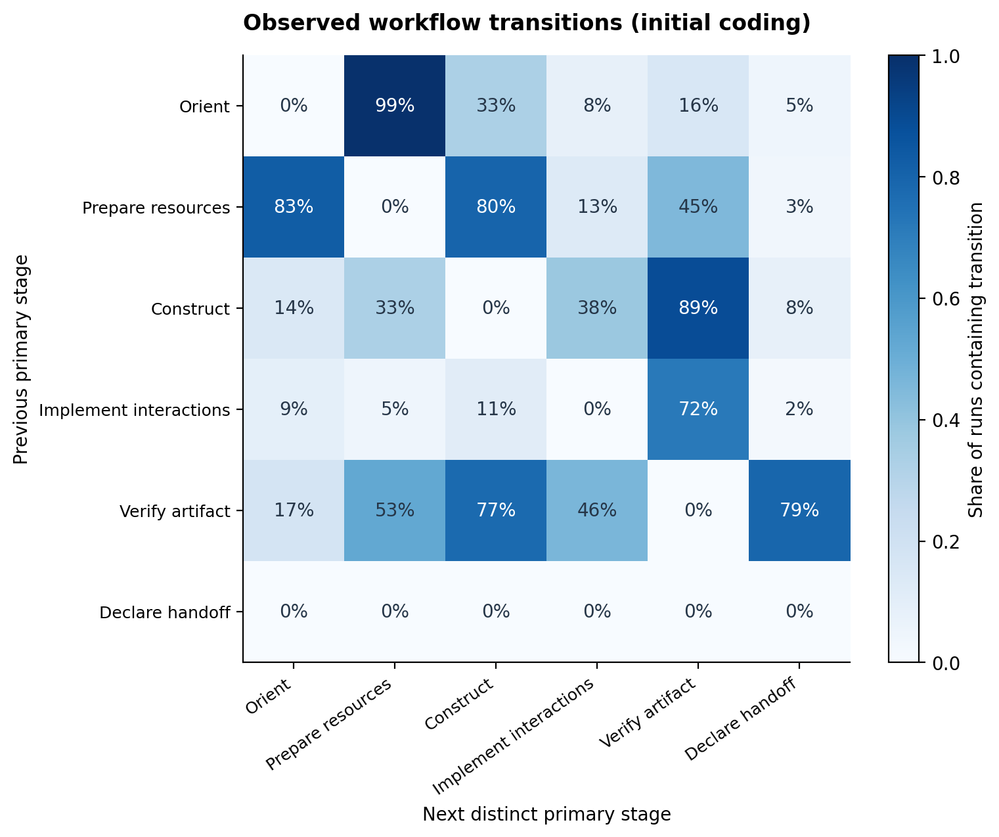
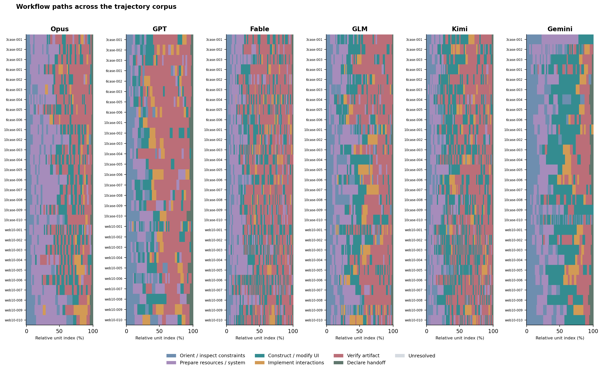
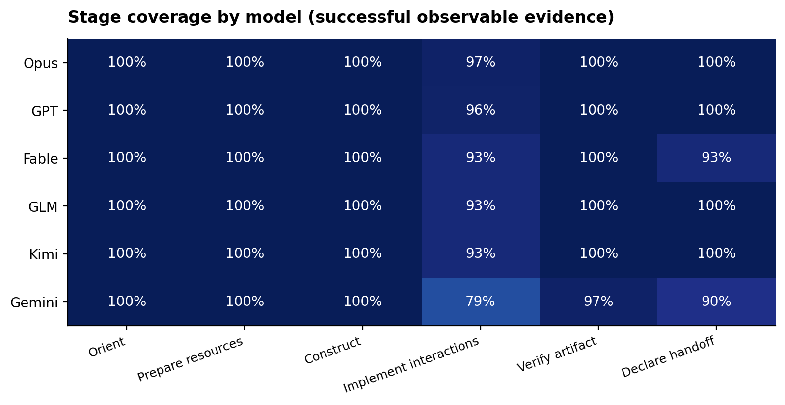

第一轮全量轨迹梳理，2026年11月8日。先归纳“在约束下制作可编辑、可复用、可持续操作的Figma文件”的工作过程，再比较各模型在这个共同结构中的组织方式。以下是规则辅助的初稿，不冒充全量人工验证或已经达到理论饱和的工作流分类。
共同骨架可概括为：建立任务与资源上下文，构建界面及交互，通过多种检查返回修改，最后形成交付声明。真实路径不是所有模型都依次完整经过的六步流水线；组件准备可能贯穿构建，交互可以嵌入同一构建脚本，验证也可能触发资源检查或重建。

| 编码 | 功能阶段 | 可观察证据 | 边界 |
|---|---|---|---|
| O | 任务与环境理解 | 账号核验、任务/规范读取、文档结构检查、工具权限或API能力探测 | 读取不等于理解；API探测不等于构建用户屏幕 |
| P | 资源与设计系统准备 | 素材/基础组件定位，变量、样式、业务组件、绘图辅助设施的准备 | 组件创建代码存在不代表实际复用正确；可与C/I重叠 |
| C | 界面构建与修改 | 屏幕组装、内容填充、布局调整、对已有界面的修改 | 成功脚本不等于设计正确；同一调用可构建多个屏幕 |
| I | 交互与状态实现 | 原型连接、滚动/固定层设置和交互相关状态写入 | 配置属性不等于经过真实交互验收，不能认为交互完整可用 |
| V | 产物验证 | 最终屏幕截图，或构建后的结构、文本、原型属性回读 | 局部检查、参考组件截图和完整交付验收必须区分 |
| D | 交付声明 | 最后工具结果之后，含文件链接和Workspace上下文的可见答复 | 是声明，不是独立确认交付完成；没有识别到也不等于没有交付 |
| 阶段 | 有成功调用/可见声明证据的运行 | 占173条 |
|---|---|---|
| 任务与环境理解 | 173 | 100.0% |
| 资源与设计系统准备 | 173 | 100.0% |
| 界面构建与修改 | 173 | 100.0% |
| 交互与状态实现 | 159 | 91.9% |
| 产物验证 | 172 | 99.4% |
| 交付声明 | 168 | 97.1% |
上述共性部分来自统一提示词：基准明确要求读取任务、规范、组件与素材，并要求构建、截图和交付。因此不能把阶段普遍出现本身写成“自主涌现的最佳工作流”。更值得分析的是：同样的要求如何被组织为不同的执行路径，以及各阶段实际检查的对象和标准。
| 观察到的组织方式 | 运行数 | 判定方式 |
|---|---|---|
| 构建与验证交错 | 139 | 成功界面构建之后、最后一次成功界面修改之前，出现验证单元 |
| 构建后再验证 | 33 | 识别到的产物验证只出现在最后一次成功界面修改之后 |
| 未观察到构建后的产物验证 | 1 | 不解释成模型从未进行任何形式的检查 |
另有76/173条轨迹在同一成功调用中同时出现界面构建与交互相关设置。把每个调用强行分到一个阶段，会把这些实现误读为“缺少交互步骤”。第一次界面构建前，173条已有任务/环境证据，172条已有资源/准备证据；这只是可见调用顺序，不是对模型内部计划的推断。

这一轮先比较路径，不用分数定义工作流类别。质量数据只留在已核实同版本的144个run上；不把四个不匹配Gemini版本的当前轨迹接到历史Arena评分，也不使用Chat Bot AI整题的人评推导质量关系。
| 模型 | 轨迹数 | 交错构建/验证 | 构建后验证 | 首次界面构建前单元数中位数 | 界面构建/修改单元数中位数 | 构建/交互同调用占比 | 有API适配探测占比 |
|---|---|---|---|---|---|---|---|
| Opus | 29 | 25 | 4 | 14 | 7 | 34% | 0% |
| GPT | 28 | 17 | 11 | 4 | 2 | 68% | 0% |
| Fable | 29 | 29 | 0 | 15 | 11 | 62% | 21% |
| GLM | 29 | 25 | 4 | 12 | 9 | 45% | 34% |
| Kimi | 29 | 29 | 0 | 12 | 17 | 31% | 7% |
| Gemini | 29 | 14 | 14 | 9 | 6 | 24% | 0% |
这些数量受脚本颗粒度影响：一次大脚本可以完成多屏，多次调用也可能只完成一个组件。不能把调用多解释为投入更多，也不能把交错循环多解释为质量更好。模型内任务差异和同任务不同模型的对照，都需要保留。


| 模型 | 可回溯片段 | 目前可支持的组织方式判断 |
|---|---|---|
| Opus | 工具调用3检查组件/素材；24构建Wallet；25截图；43写原型连接 | 资源与系统准备、屏幕构建、视觉检查和连接实现可以区分；不凭这一例推断所有任务一致 |
| GPT | 调用2集中读取任务/规范/资源；调用3同时包含P+C+I；调用4单独接原型；随后截图回读 | 存在把多屏和共享组件集中构建的方式，不能按一次调用只计一个阶段 |
| Kimi | 调用9开始Wallet，随后重建和截图；调用31接原型；后续还回到布局修正 | 构建与验收多次交错；但静态截图与文本检查不等于滚动状态已正确验证 |
| Gemini | 调用16创建Wallet；后续分别构建屏幕；末尾原型脚本报错，运行记录API终止 | 应区分分段构建、晚期连接和外部终止；不能把没有后续修复一律解释为主动放弃 |
调用序号从0计，依据当前所选完整日志/轨迹；可在证据查看器按模型和题目定位。定向抽查覆盖六模型的Investment Wallet与Furniro，记录保留于抽查样本；这不是独立双标，也不是全量分类准确率估计。
| 共同阶段 | 需要编码的差异 | 已有案例为何值得检验 |
|---|---|---|
| 任务/资源理解 | 是否把需求、资源和实现位置建立可核对映射 | 读取过素材目录不保证使用正确；“读了”与“落实了”应分开 |
| 构建与恢复 | 局部修复是否保持全局数量、唯一性和对象身份 | GLM Fruit Hub有检查与重建，最终仍留下两套屏幕 |
| 交互实现与验收 | 是否区分视口、滚动内容、固定操作层和覆盖态 | Kimi Investment Wallet有全屏截图和反复修正，仍存在滚动层级问题 |
| 最终验收 | 核对的是新建局部还是整个交付集合；是否覆盖风险屏幕 | Furniro Blog没有被截查；节点存在不能证明内容可读 |
| 交付声明 | 声明的范围与实际验收证据是否一致 | D阶段只说明说出了交付入口，不是完成证明 |
这些是待统一编码的差异轴，不是已经证实的成功原因。此前8项行为计数的相关性分析仍保留，作为阶段分析后的辅助证据；这里不继续通过增加指标寻找显著性。
当前1,396/9,474个单元被标记为需复核，原因包括多功能重叠、只读目的兜底判断或截图目标范围不清；其余单元也没有全部人工确认。所有行保留run、来源文件、message索引、工具调用ID、描述、规则依据和代码片段。工作流标签在连接质量结果之前生成，但本轮分析者已知部分既往案例结果，不能称作完全盲法。
python arena/analysis/workflow_analysis.py → python arena/analysis/workflow_report.py。174格轨迹定位表 · 功能单元编码 · 逐run工作流 · 规则修订记录 · 统计口径 · 证据查看器。